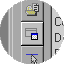

To Specify the Size and Position of the Help Viewer or a Help Window
Microsoft Corporation
Updated June 10, 1999
Open a project (.hhp) file, and then click Add/Modify Window Definitions.

Add/Modify Window Definitions
Adds or edits window definitions and the general appearance of the HTML Help Viewer.
Click the Position tab, and then, in the Window type box, select either the Help Viewer or the secondary window for which you want to specify a size and position.
If you want to use default positions, click Default Positions.
If you want to specify an exact size and position, click Autosizer. A sample window appears. Size the sample window by dragging its borders, and position it by dragging its title bar. When you are done, click OK in the sample window.
Notes
You can also specify the size and position of the Help Viewer or a secondary window by typing values in the Left, Top, Width, and Height boxes. The Left and Top boxes determine a window's position. The Width and Height boxes determine its size. You can mix and match default and specific values in these fields. For example, you can specify the width and height of a window, and let HTML Help Workshop determine the window's left and top positions.
The HTML Help Viewer window size specified will include the screen space taken up by the Navigation pane (unless you do not include a Navigation pane in your window definition).
If you are viewing help and change the window or tab positions, the new locations are stored in the Hh.dat file, which is located in a user's Windows folder. Help authors who reposition the Help Viewer need to delete this file if they want to view the default window and tab settings set up in their project file.